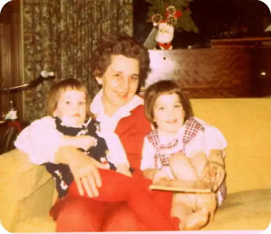
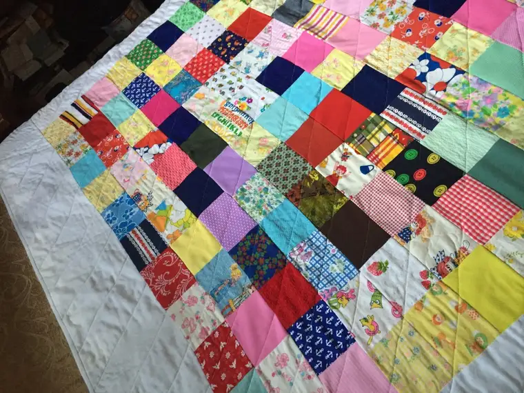
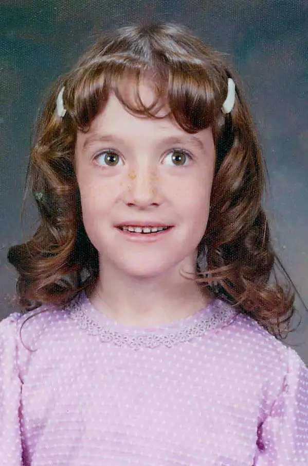
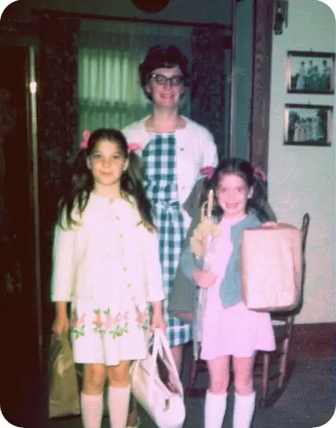
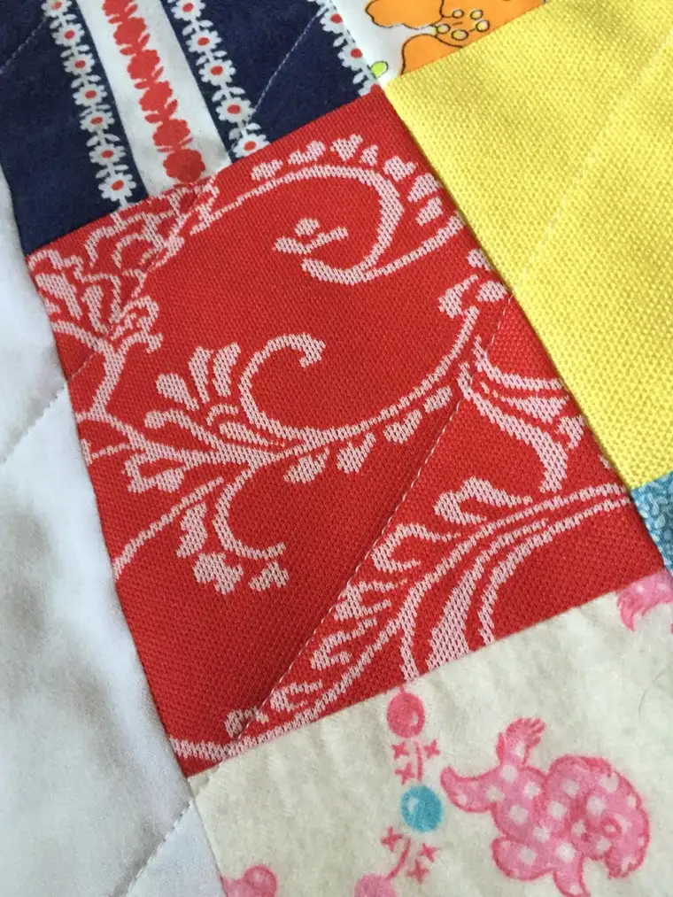
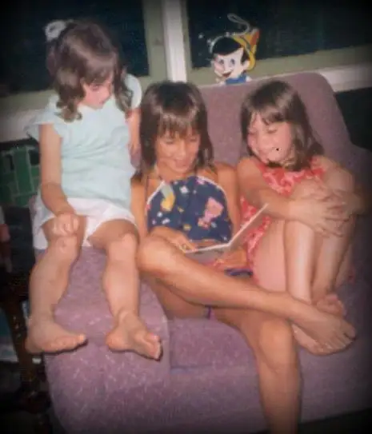
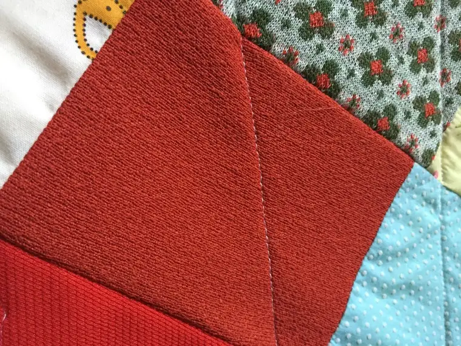
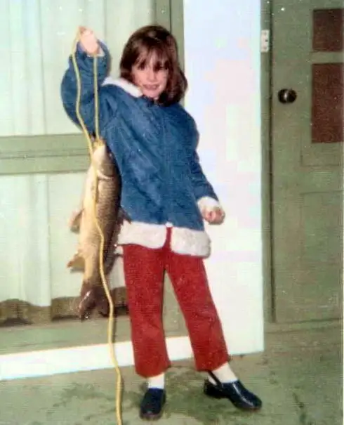
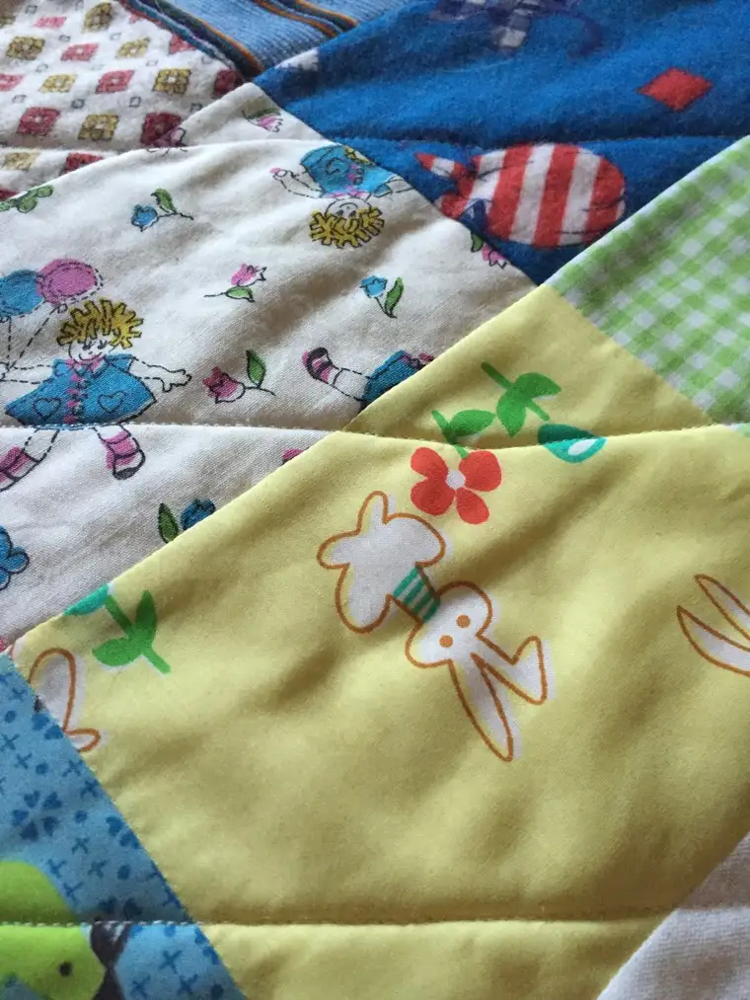

The heading might call to mind something morbid, but this is anything but.
Yes, my grandmother died, just a few months ago on Dec. 28. She was 101, and even though we miss her, we had a lot of good, long years with her. We all feel pretty blessed in that.
As her oldest two grandchildren, my sister, Camille, and I had the most years with her, and for that, we are even more blessed. I had 47 years with Grandma and my good memories go back just as far.
Grandma was the consummate mother. She belonged to a Mother’s Club. She was a Girl Scout leader for a while. She taught religion class for a time. She poured money and time into building the local Y, then swimming laps there, and making sure we all knew how to swim.
And she sewed her children’s clothes — and ours when we came into the picture. I remember during visits arriving and finding her there in the living room with the sewing machine and all the material, thread and pin cushions, too. She was always happy to take breaks to read to us, though.

My mother never learned the art of it, but she appreciated her mama’s skill. In our earliest years, she didn’t have to buy many clothes for us. Grandma sewed them all. My sister and I were only 17 months apart, and Grandma often made us matching clothes in the earliest years. Some of our young peers accused us of being “twins.” The matching clothes had them fooled.
In time, our clothing tastes changed so Grandma’s machine didn’t hum quite as much, but she did continue sewing a bit — clothes for our dolls, mending and the like.
When my sister graduated college — or perhaps it was when she got married just after that — my grandmother pulled together scraps from all of these sewing projects from our years as little girls and made her a patchwork quilt. I loved it, and secretly hoped my quilt was in the works, too.
Grandma did start a quilt for me, but never finished. Later, we learned that her arthritis had kicked in around that time. So she just folded the project into a box, closed it up, tucked it away somewhere, and moved on with life.
And there the quilt sat, in the dark, still and silent…waiting.
Flash forward to January of this year. Now, Grandma is gone, and my mother and sister are going through her home, sorting what to keep, what to give away. And in the midst of all that, a box appears under Grandma’s bed, contents unknown. When my mother opens it, she discovers the face of the quilt Grandma had started for me all those years ago.
Sizing it up, my mother becomes determined to find a way to bring the quilt back to life. My sister mentions a friend who quilts, and a revival begins. In another time and place from whence it began, a project set in motion by my grandma’s arthritic hands — with me in mind and love on her heart — experiences a resurrection.
My mother had told me it would come in time, but I forgot about it. Then one spring weekend, my daughter and I head to the city where my mother lives to do a college visit. I’m totally focused on my daughter and the task at hand. When my mom calls and leaves a message, it doesn’t connect.
“I have a surprise for you!” I’m thinking it must be for my daughter. But when we stop by her place to pick her up for lunch, Mom says, “Come inside a minute, Rox. The surprise is for you!” Inside her apartment, she hands me something in a large, plastic bag: the quilt, wrapped and ready. And so many memories infused within.

Now, it’s on our bed, and at night, I pull it over me, and I feel Grandma’s love there, keeping me warm, sending me into another night of rest.
It is her gift from the grave, but the “better late than ever” rule applies here. I am so grateful to have it.
I’m also very grateful to my mother for finding it and having the idea; for my sister for being the bridge; for her friend Esther for being willing to find time in her life to make this happen, for me.
It’s an early birthday present, months in advance, and I couldn’t be more tickled. Grandma isn’t here anymore, and yet she is, very much so.
I love you, Grandma. Thank you for all the love you sewed into our clothes all those years. Each thread was a piece of you given to us. Each knot, a note of love. Each snip of the scissors, a smile for your granddaughters.
Thank you, dear Grandma, for nudging the project along from your new place. I hope you have a warm quilt to keep you toasty, too. Or just to make you happy if warmth is no longer a need. And I hope your own mama is there to pull it over you each night.
Here are some of the pieces, and the corresponding clothes…









Q4U: What pieces of your loved ones bring them back to you?